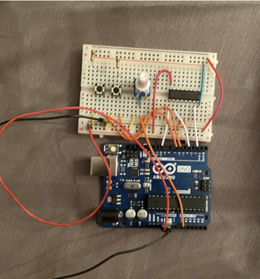
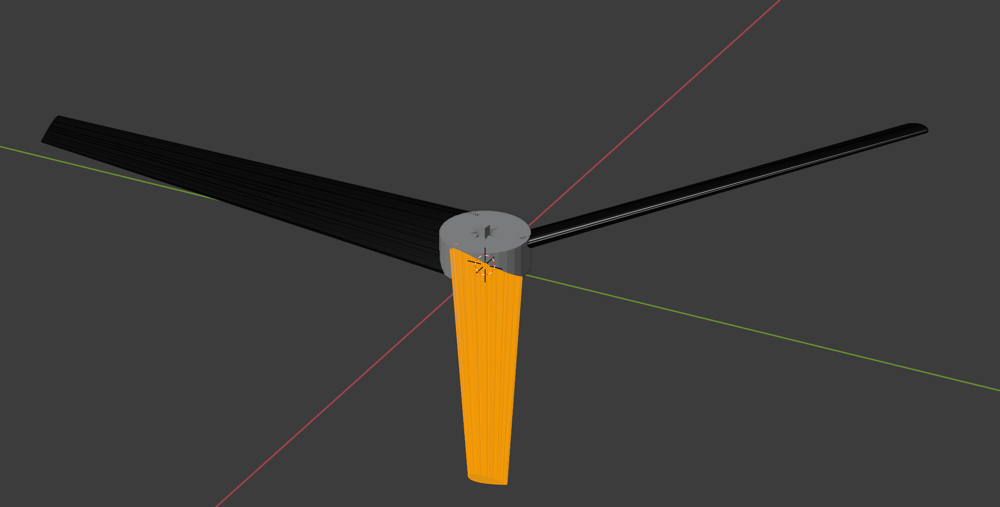
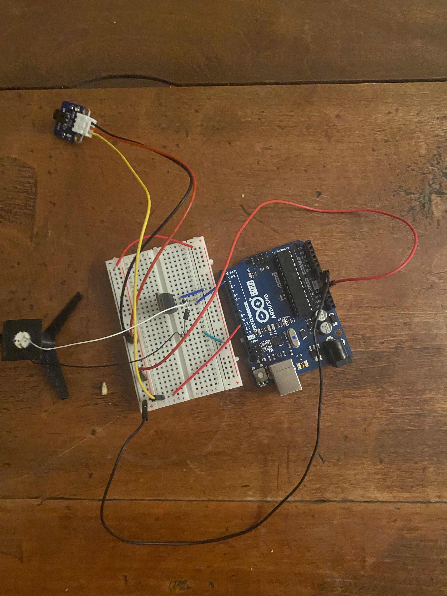

Completed a year-long research project through my high school's stem research program. Conducted a study on creating unmaned quadcopter to fly on Mars. Completed testing on propellers in less atmosphere with a bell vacuum chamber. Wrote a journal-style paper on my research
Initially, I was going to test spacing between two different propellers. The plan for that is summerized in this presentation I gave for the PJAS science fair competition in Feb 2021. However, I changed focus from this problem due problems with ossilations from a 3d printed gearbox, and inability to machine one.
Propeller and gearbox setup used in testing
 Electronics I used for testsEvetually, in intrest of getting to do tests inside the vaccum chamber, I switched focus to test different sized individual propellers. Here, I 3d printed 4 sized propllers and tested them in both sea-level pressure and in reduced pressure. I then wrote a paper about my research.
6 cm radius propeller in Blender evetually used in testing
 Electronics for remote controlling the motor
Bellow is a relection I wrote in May 2021 on my feelings after the project:
Throughout this year, my engineering goal was to create a drone that could fly on Mars, or to create design guidelines for such a drone. Neither of these goals were achieved, and no data working towards them was synthesized. This was due to many problems encountered while designing the electronics and the gearbox for the testing apparatus. However, I did learn much through the process.
First, my knowledge of some scientific concepts and computer science improved. I learned better how electronic circuits work and more about how they are designed. I also improved my abilities to code by using the arduino. Finally, I improved my 3d modeling skill so I can better design something in the future. <\p>
Past the physical knowledge I learned, I was able to better my abilities at researching. I learned that sometimes, I just need to try something to see if it works, and if it doesn’t work, I can still learn from it. I also learned how helpful collaboration can be in research and how it can lead to far greater discoveries. I feel that in college, I can use the skill I learned to become a successful researcher.<\p>
But greater than all of these, I grew as an individual through the process. I learned much about how my brain works, how I tend to communicate, and how I function as an individual. I also learned that sometimes, no matter how hard I try, I will not work well with some people, and that that idea is OK. I know myself better than I did before, and this will help me greatly in the future.<\p>